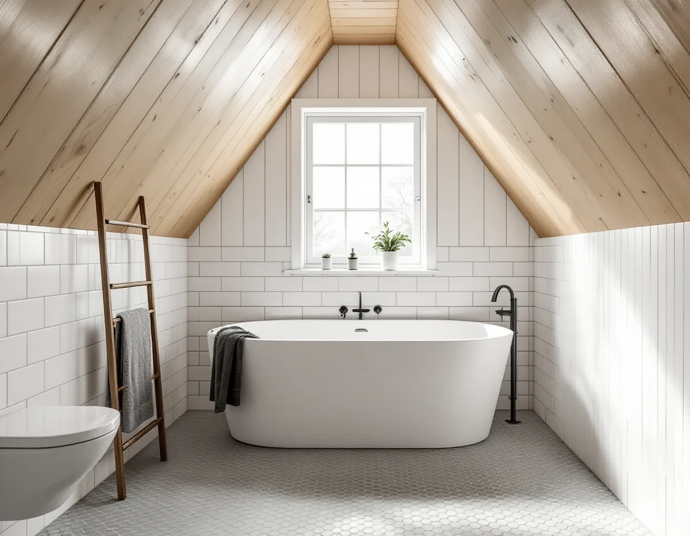
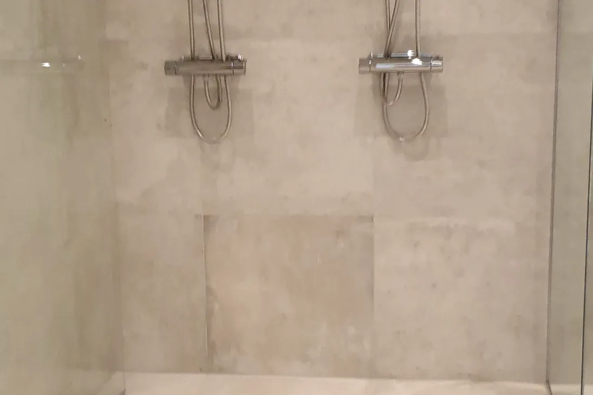

Platsbesök
Vi ser rummet, golvet och fönstret och frågar om huset är villa eller bostadsrätt.
I Gamla Enskede står trähus som byggdes efter typritningar från 1908 och framåt, och runt dem finns flerbostadshus där de flesta lägenheterna är bostadsrätter. Ett badrum i ett plankhus på träbjälklag och ett badrum i en lägenhet kräver olika förberedelser. Geal Entreprenad AB river, bygger tätskikt och ytskikt och samordnar VVS och el, med gratis platsbesök och skriftligt kostnadsförslag.

Stadsmuseets byggnadsinventering av Gamla Enskede berättar att utbyggnaden började sommaren 1908. I tomträttskontraktet åtog sig staden att anlägga och underhålla vägar och ledningar för vatten, avlopp och gas, och husen fick bara innehålla ett kök.
Inventeringen beskriver husen typ för typ. Många är fristående enfamiljshus med källare, en våning och inredd vind, byggda i trä med plankstomme. Flera av de tidiga typerna anges som 3 rum och kök, medan till exempel en typ från 1911 och en typ som Bostadsföreningen Sten Sture uppförde i ett tiotal exemplar 1922 anges med bad.
Ett badrum i ett sådant hus kan alltså ha byggts till eller om i efterhand, kanske i flera omgångar. Innan något nytt planeras vill vi se vad som döljer sig under golvet och bakom väggarna, och hur avloppet går ner genom källaren till ledningen i gatan.

Ett trägolv rör sig med årstiderna. GVK:s regel om att förstärka träbjälklag säger att golv som ska få kakel, klinker eller natursten måste förstärkas för att motverka svikt och fuktrörelser. Sviktar golvet för mycket lossnar plattorna.
Förstärkningen kan göras med en formstabil skiva som limmas och skruvas fast eller med lättfyllnadsmassa mellan golvbjälkarna. Reglerna utgår från ett visst avstånd mellan bjälkarna och en största spännvidd, och i ett hus från 1910-talet behöver bjälkarnas dimension och skick därför kontrolleras först.
Ska badrummet få golvvärme rekommenderar GVK att en konstruktionsritning ligger till grund för utförandet, så att bjälklagets stabilitet inte äventyras. Golven i resten av huset beskrivs under sidan om golvläggning.
Har badrummet ett fönster gäller särskilda regler, och GVK kallar fönster i badrum för en riskkonstruktion. Enligt GVK:s regel om tätskikt mot fönster ska ett fönster inte placeras i plats för bad eller dusch. Sitter det i våtzonen ska väggens tätskikt anslutas mot karmen enligt tätskiktsleverantörens anvisning, och fönstersmygarna ska luta in mot rummet.
GVK rekommenderar också att fönstrets underkant sitter minst 150 millimeter över golvet, och att den som duschar nära ett fönster som kan få vattenstänk använder ett duschdraperi eller liknande. Går duschen inte att flytta bort från fönstret föreslår vi en lösning med glasvägg. Fönstret i sig, och hur det tål fukt, tas upp under fasadrenovering i Enskede.
Gamla Enskede är inte bara villor. Enligt stadens områdesfakta fanns det 5 117 bostäder i stadsdelen 2025. 923 av dem låg i småhus, men 3 708 låg i flerbostadshus, och 2 303 av dessa var bostadsrätter.
Enligt bostadsrättslagen 7 kap. 7 § får du inte utan styrelsens tillstånd göra ingrepp i bärande konstruktion, installera eller ändra ledningar för avlopp, värme, gas eller vatten eller ändra ventilationen. Styrelsen får säga nej bara om åtgärden är till påtaglig skada eller olägenhet för föreningen, och den som är missnöjd kan begära att hyresnämnden prövar frågan. Stockholms stad påpekar att du kan behöva föreningens tillstånd och råder dig att kontakta styrelsen innan du börjar planera att flytta kök eller badrum.
Kommunen behöver bara kopplas in om flytten påverkar bärande konstruktion eller brandskydd, om ventilationen ändras väsentligt eller om en ny VA-stam dras i ett nytt schakt. Ett större kök i samma hus beskrivs under köksrenovering i Enskede.
Vi ser rummet, golvet och fönstret och frågar om huset är villa eller bostadsrätt.
I villan kontrolleras bjälkarna, i lägenheten var stammen och frånluften går.
Förstärkning, rivning, tätskikt, VVS, el och ytskikt står som separata poster.
Rummet rivs, och träbjälklaget förstärks innan tätskiktet läggs.
Tätskikt mot golv, väggar och fönster; behöriga installatörer drar rör och el.
Kakel och porslin monteras, och du får dokumentationen.
Avdraget är 30 procent av arbetskostnaden, högst 50 000 kr per person och år och högst 75 000 kr tillsammans med rutavdrag. I en bostadsrätt gäller det arbete inne i lägenheten, i en villa hela badrummet.
Material ger inget avdrag. Geal drar avdraget direkt på fakturan.
I villan mest bjälklagets skick och hur mycket som måste förstärkas, i lägenheten stammens läge och föreningens krav. Ytskikten spelar in i båda. Platsbesöket är gratis, och du får ett skriftligt kostnadsförslag.
Tätskikt, golvbrunn, el, VVS och intyg.
Badrumsrenovering i Stockholm →Takbyte, takbesiktning och plåtarbeten.
Takläggare i Enskede →Trädgårdsstad med lertegel.
Takrenovering i Enskede →Byggplatsen, gatan och träden.
Byggföretag i Enskede →Trähus, putsade typhus och småstugor i Enskede.
Fasadrenovering i Enskede →Lut, såpa och olja på fur och gran.
Golvläggare i Enskede →Slipa fram gamla brädgolv i villan.
Golvslipning i Enskede →Typhus, dubbelhus och småstugor.
Köksrenovering i Enskede →Trädgårdsstad, egnahem och småstugor i Enskede.
Målare i Enskede →Snörasskydd, rännor och verandaplåt i Enskede.
Plåtslagare i Enskede →Verandor, entréer och bodar i trädgårdsstaden.
Snickare i Enskede →Tapet i vindsrum och snedtak.
Tapetsering i Enskede →Små tomter och riksintresse.
Tillbyggnad i Enskede →Renovera innan ni flyttar in.
Totalrenovering i Enskede →